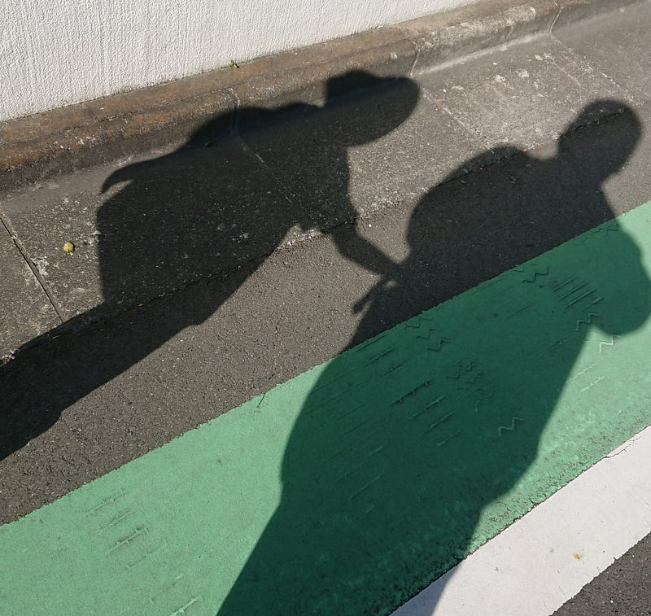

長男の登校と世界と
長男の登校と世界と
初めての子供が産まれて、この子のためになるたけに家にいよう、と思ったのはもう今から七年近く前のこと。
ほぼ毎日送り迎えをして、ご飯を一緒に食べて、お風呂にいれ、寝る前の読み聞かせからお休みまでやってきた（もちろんそれ以上に妻もやってくれてるけど、これは僕の話なので割愛）。
今月から長男は小学生になった。

まだまだ頼りないし、まだまだ面倒を見てあげないといけないものの、曲がりなりにも彼はもう一人で、自分と同年代の子供たちのいるコミュニティーに登校するようになった。
初めての登校の日、彼は登校途中でバス停に向かう僕と別れ、ひとり不安そうに校門のある方向に一歩一歩踏みしめながら頑張って歩いていった。
でもきっと明日、明後日とだんだんその足取りは軽やかに、自信に満ちあふれていくと思う。
そんなわけで、自分の中ではここで一区切り。
もう面倒をみないよ、というわけでは決してないけど、外の世界と自分から関わりを持つようになるから、これからは積極的に今までしっかりと掴んでいた彼の手を離し始めると思う。
これからの成長も間近で見ていたいけど、自分は年の離れた妹の成長を見ていたおかげで、子供がここから急にひとりの人間になっていくのを知っている。
そのかわり、ここからは彼が一緒に遊んでほしい、と言うときにはこれまで通りしっかり時間を作りたいと思う。
彼が大人に近づく分だけ、彼と一緒にいられる時間のタイムリミットが近づいているから。
彼が「とうちゃん」と呼びかけてくれて「遊ぼう？」って言ってくれる回数にはもう限りがあるから。
子育ては最初からいつか終わる、とわかってる恋愛関係みたいなものだと思う。
子供たちは最初から熱烈に我々の愛を欲しがる。僕らも与える。そうすると彼らもそれを返してくる。相思相愛の蜜月が10年くらい続く。
でも、いつか彼らは巣立っていく。親はそれをわかってても愛を与えるが、それでもいつか終わりがくる。
長男との濃密な関係はまだ終わってないけど、親の入ってこない世界に足を踏み入れたからには、親子だけの世界の終わりが見えてきたのは事実だ。
彼は未知の学校という場所とそこにいる様々な人間達との関わりを持つことによって、自分だけの世界への鍵を手に入れた。
あと、もう少しだけ、一緒にいさせてくれると嬉しいな。
頑張れ。
…とかいいつつ、まだ次男三男がいるからあと五年は家にTHE子供がいるんで、まだまだ幼児との生活は楽しむ予定です！